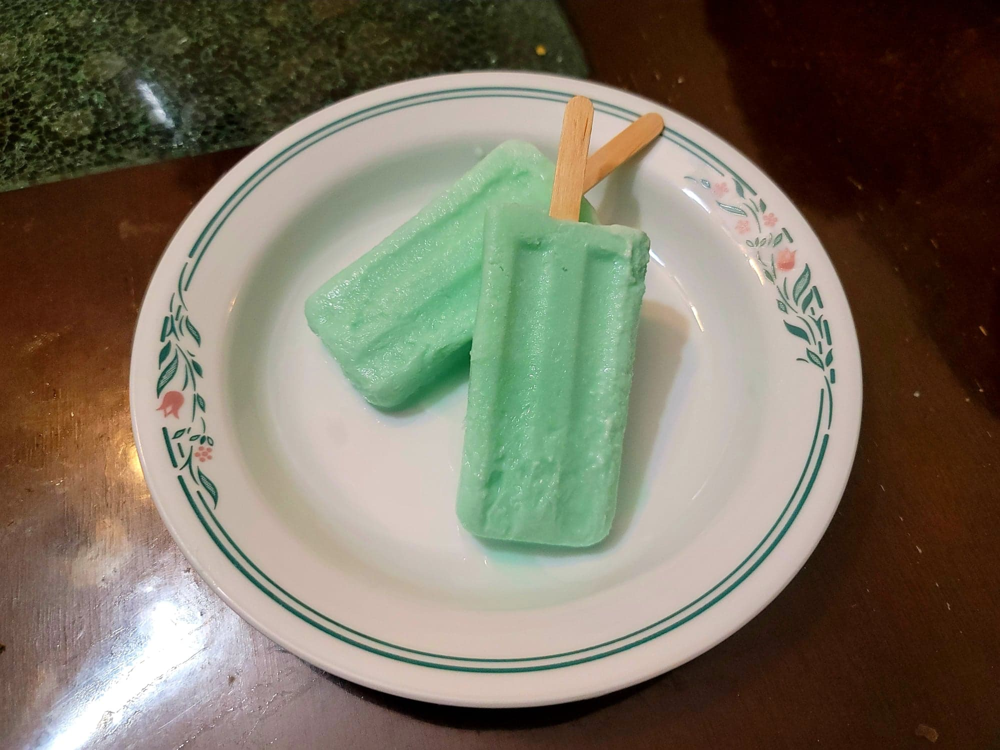

Sea Salt Popsicles

Ingredients:
- 1 1/2 cups Milk
- 1 1/2 cups Heavy cream
- 3 tbsp Cornstarch
- 3/4 cup Sugar
- 1 tsp Salt, or to taste
- 3-5 drops Teal food coloring
Instructions:
- Place 1/2 cup each of the milk and heavy cream into a bowl and whisk together with the cornstarch.
- Pour the rest of the milk and heavy cream into a pot and bring to a simmer over medium-low heat. As it comes to a simmer, whisk in the sugar. Then, pour the cornstarch milk into the heating pot while whisking constantly until it thickens, about 1 minute.
- Whisk in the salt and then remove from heat. Strain the mixture into a heat proof bowl and then whisk in the food coloring. Cover and transfer to the fridge to chill completely.
- Once chilled, pour into an already churning ice cream maker. Let churn for 25 minutes. Once a soft serve consistency, transfer into popsicle molds using a piping bag. Transfer to a freezer to firm up overnight. Serve frozen.